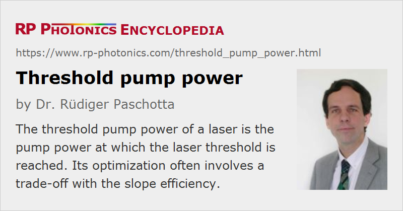

Threshold Pump Power
Definition: the pump power at which the laser threshold is reached
German: Schwellenleistung
Categories: nonlinear optics, lasers
How to cite the article; suggest additional literature
Author: Dr. Rüdiger Paschotta
The threshold pump power of a laser is the value of the pump power at which the laser threshold is just reached, usually assuming steady-state conditions. At this point, the small-signal gain equals the losses of the laser resonator. A similar threshold exists for some other types of light sources, such as Raman lasers and optical parametric oscillators.
For an optically pumped laser, the definition of threshold pump power may be based either on the incident or absorbed pump power. For applications, the incident pump power may be more relevant, but the threshold power with respect to absorbed power can be interesting e.g. for judging the gain efficiency of the gain medium.
A low threshold power requires low resonator losses and a high gain efficiency. The latter is achieved by using, e.g., a small laser mode area in a gain medium with a high σ−τ product. The latter is fundamentally limited by the emission bandwidth. Therefore, broadband gain media tend to have higher laser thresholds.
For a simple four-level laser gain medium, we can use an equation for the gain efficiency from the corresponding article for calculating the threshold pump power:
where lrt is the round-trip power loss of the laser resonator (taking into account the output coupler loss and parasitic losses), h νp is the photon energy of the pump source, A is the beam area in the laser crystal, ηp is the pump efficiency, τ2 the upper-state lifetime and σem the emission cross section. It is assumed that the power losses lrt per round trip and thus the round-trip gain is small (e.g. below 20% or 1 dB). The equation can be used for the pump threshold concerning either incident or absorbed power, if the pump efficiency is defined accordingly.
The optimization of the laser output power for a given pump power usually involves a compromise between high slope efficiency and low laser threshold power. In typical situations, the pump power used in normal operation is several times higher than the pump threshold power. The question of which value is most appropriate for the threshold pump power is one of the issues of laser design.
The dependence of output power on pump power of a laser is not always as simple as shown in Figure 1. For example, the onset of lasing may not be as well defined in some lasers with high resonator losses. The threshold pump power is then sometimes defined by extrapolating the approximately linear curve at higher powers down to zero.
There are some exotic types of lasers, e.g. single-atom lasers, which have no laser threshold, and are thus called thresholdless lasers.
Questions and Comments from Users
Here you can submit questions and comments. As far as they get accepted by the author, they will appear above this paragraph together with the author’s answer. The author will decide on acceptance based on certain criteria. Essentially, the issue must be of sufficiently broad interest.
Please do not enter personal data here; we would otherwise delete it soon. (See also our privacy declaration.) If you wish to receive personal feedback or consultancy from the author, please contact him e.g. via e-mail.
By submitting the information, you give your consent to the potential publication of your inputs on our website according to our rules. (If you later retract your consent, we will delete those inputs.) As your inputs are first reviewed by the author, they may be published with some delay.
See also: laser threshold, pump parameter, lasers, thresholdless lasers, optical parametric oscillators, optical parametric generators, The Photonics Spotlight 2009-09-27
and other articles in the categories nonlinear optics, lasers
|  |
If you like this page, please share the link with your friends and colleagues, e.g. via social media:
These sharing buttons are implemented in a privacy-friendly way!